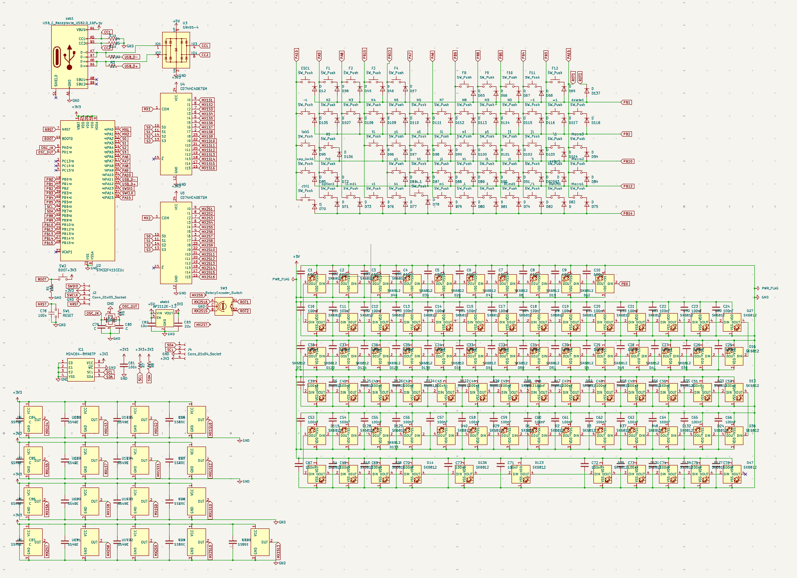

01
Embedded hardware
Hall Effect / Mechanical Keyboard
Designed a custom 75% keyboard that combines Hall Effect sensing with traditional mechanical switches. The system includes a custom PCB and firmware, per-key RGB lighting, and hot-swappable switches.
